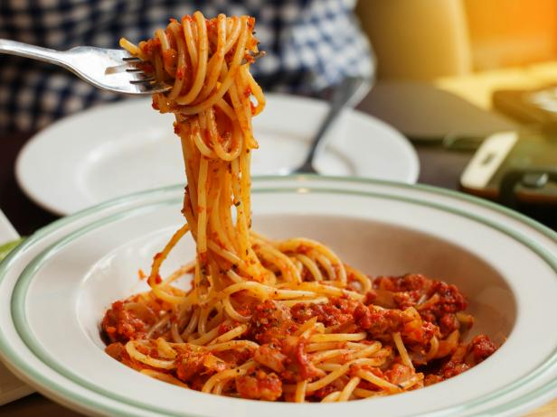

Spaghetti
A very simple spaghetti and meat sauce recipe that is quick, cheap, and delicious. First you'll need:
- 1 to 2 lbs of ground beef, I prefer 80/20
- 1 package of spaghetti noodles
- 1 jar of your favorite spaghetti sauce
- Salt
- Olive Oil
Now that we have our ingredients, we start the super simple process. It should take no more than 20 minutes or so.
- Bring a pot of water to boil. While it's heading up, add a couple tablespoons of olive oil, and a teaspoon or so of salt to the water. Once boiling, add some noodles and stir frequently. You won't need the whole box, around half should work fine.
- Meanwhile start heating a saucepan to medium heat. Once hot, brown the ground beef.
- Now that the ground beef is sufficiently cooked, drain the exceess oil with a collinder.
- Return the beef to the pan and reduce the heat to low. Pour in the spaghetti sauce and bring to a simmer, stirring occasionally.
- Around this time the noodles should be done, the easiest way to tell is to pull one out and taste it! If they are done, drain the water with the collinder, and return them to the pan.
- Once the sauce is bubbling a bit everything is ready. Give it a final stir and check the temperature to make sure it's hot enough.
To serve, put some noodles on the plate, and the sauce on top. You can
sprinkle parmesan cheese to add flavor as well. Alternatively, you can
premix the sauce with all the noodles in the pot and serve it that
way. It's up to you! I typically make some sort of breadsticks or
garlic knots with this meal, and since I'm usually trying to keep it
quick, frozen breadsticks work great!
Enjoy!